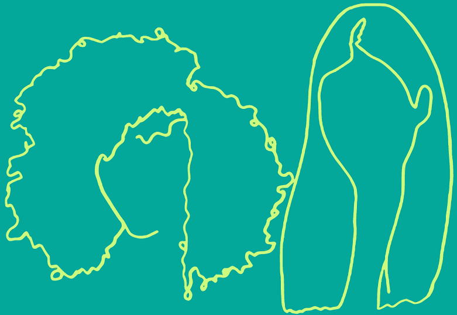
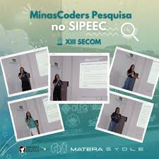

MinasCoders

Minas Coders – UFV Florestal
O Minas Coders é um evento acadêmico-científico organizado pelo Curso de Ciência da Computação da Universidade Federal de Viçosa – Campus Florestal (UFV Florestal), voltado para o fortalecimento da comunidade de programação e tecnologia da região e para a divulgação de conhecimentos atualizados na área de computação.
O Minas Coders é um evento acadêmico-científico organizado pelo Curso de Ciência da Computação da Universidade Federal de Viçosa – Campus Florestal (UFV Florestal), voltado para o fortalecimento da comunidade de programação e tecnologia da região e para a divulgação de conhecimentos atualizados na área de computação.
História e Organização
- Criado como uma iniciativa dos professores e estudantes do curso de Ciência da Computação da UFV Florestal.
- Realizado anualmente ou semestralmente, dependendo da organização do centro acadêmico e coordenação do curso.
- COrganizado pelo Centro Acadêmico de Ciência da Computação, professores do departamento, coordenação do curso e estudantes voluntários.
- Conta com apoio da UFV Florestal, empresas de tecnologia parceiras, startups regionais e ex-alunos.
Objetivos
- Promover a integração entre estudantes, professores, profissionais e entusiastas de tecnologia.
- Divulgar e compartilhar conhecimento sobre linguagens de programação, desenvolvimento de software, inteligência artificial, segurança da informação e inovação tecnológica.
- Estimular o interesse pela programação competitiva e pela pesquisa em computação.
- Preparar os estudantes para o mercado de trabalho, expondo novas tendências e realidades profissionais.
Atividades Desenvolvidas
Durante o Minas Coders, são oferecidas diversas atividades, incluindo:Minicursos práticos:
- Desenvolvimento Web (HTML, CSS, JS, frameworks)
- Desenvolvimento Mobile
- Programação em C, C++, Python, Java
- Machine Learning e Data Science
- Bancos de Dados
- Segurança da Informação
Palestras e talks
- Temas como tecnologia no mercado de trabalho, carreira em TI, inovação, startups, UX/UI design.
- Experiência de ex-alunos e profissionais convidados.
Maratona de Programação
- Competições internas e regionais, preparatórias para eventos como a Maratona de Programação Brasileira.
- Equipes de estudantes resolvem problemas de lógica e algoritmos no menor tempo possível.
Workshops e oficinas
- Práticas em tecnologias emergentes.
- Metodologias ágeis, Git/GitHub, DevOps.
Apresentação de projetos
- Trabalhos acadêmicos, projetos de pesquisa, extensão ou iniciação científica.
- Demonstrações de sistemas, aplicativos ou sites desenvolvidos por estudantes.
Participação
Público-alvo: estudantes de Ciência da Computação, Sistemas de Informação, Engenharia, professores, profissionais de TI, escolas técnicas e comunidade interessada em tecnologia. Conta com centenas de participantes, tornando-se referência no campus para o setor de computação.Impactos
Capacitação prática e técnica dos estudantes, complementando a formação curricular. Fortalecimento do networking entre estudantes, professores e profissionais convidados. Estimula o espírito de equipe e raciocínio lógico através das maratonas e oficinas. Divulga o curso de Ciência da Computação para a comunidade regional e para futuros estudantes, incentivando o ingresso na área de TI. Contribui para o desenvolvimento tecnológico e inovação local.Galeria

